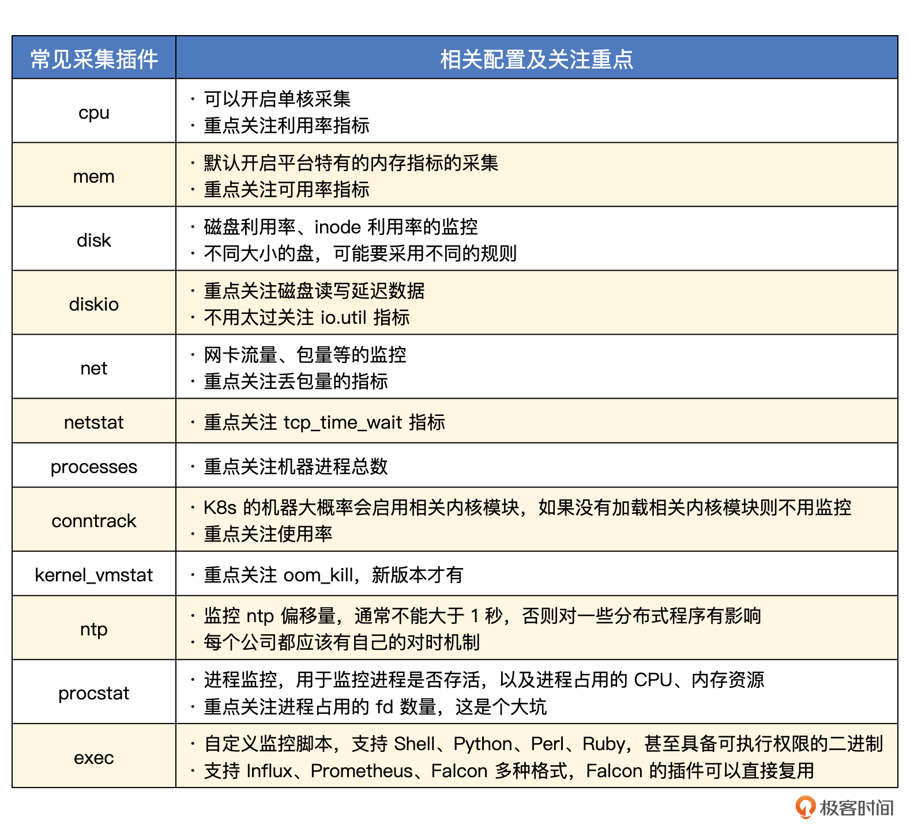

机器监控-操作系统重点关注指标
监控方向里我们最耳熟能详的，就是机器监控，也就是我们前面说的设备监控中的一种。机器是进程运行的基础环境，在制作中间件、应用监控仪表盘的时候，我们一般会把机器核心指标，比如CPU、内存、磁盘、网络、IO等，作为仪表盘的一部分，USE方法论主要就是针对机器监控提出的，其重要性不言而喻。
机器监控手段
机器层面的监控分为两部分，带内监控和带外监控。带内监控就是通过带内网络来监控，主要是以在OS里部署 Agent 的方式，来获取 OS 的 CPU、内存、磁盘、IO、网络、进程等相关监控指标。随着云时代的到来，普通运维研发人员主要关注带内监控即可，IDC运维人员才会关注带外监控。不过为了让你的知识网络更加完整，带外监控我也浅聊几句。
带外监控走的是带外网络，通常和业务网络不互通，通过 IPMI、SNMP 等协议获取硬件健康状况。
IPMI可用于监控硬件的物理参数，如系统温度、风扇速度、电源电压等，可以有效地利用IPMI监控硬件温度、功耗、启动或关闭服务器和系统，以及进行日志记录。IPMI的一个主要亮点是，它的功能独立于服务器的CPU和操作系统。因为固件是直接在服务器主板上运行的，所以不管安装的操作系统是什么，它都可以用于管理各种远程位置的服务器。
BMC（服务器基板管理控制器）也可以开启SNMP的支持，通过SNMP Trap做硬件监控是一个很好的思路。不过目前没有看到比较好的产品，可能一些老牌的国外监控产品可以做，但是那些产品都偏老套且收费昂贵。不过现在大都在上公有云，传统的SNMP Trap的监控，已经是一个存量需求了，不懂也不用太过焦虑。
我们再回来看带内监控，常见的 Agent 有 Categraf、Telegraf、Grafana-agent、Datadog-agent、Node-exporter 等，这一讲我们除了介绍基本的CPU、内存、硬盘相关的监控，还会介绍一下进程监控和自定义监控脚本，所以我们选择Categraf，相对比较方便。
Categraf 介绍
Categraf 作为一款 Agent 需要部署到所有目标机器上，因为采集 CPU、内存、进程等指标，是需要读取 OS 里的一些信息的，远程读取不了。采集到数据之后，转换格式，传输给监控服务端。
Categraf 推送监控数据到服务端，走的是 Prometheus 的 RemoteWrite 协议，是基于 Protobuf 的 HTTP 协议，所以所有支持 RemoteWrite 的后端，都可以和 Categraf 对接，比如 Prometheus、Nightingale、TDEngine等。
Categraf 在 Github 的 Releases 页面提供了所有的版本信息，每个版本的发布，都会提供 changelog 和二进制发布包。Categraf默认提供 Linux 和 Windows 两个平台的发布包，当然，Categraf 也可以跑在 macOS 上，如果有兴趣你也可以自行编译测试。
Categraf 配置
为了方便看到效果，我把 Categraf 采集的数据推送给 Nightingale，即 n9e-server 的 /prometheus/v1/write 地址，你可以看一下相关的配置。
[[writers]]
url = "http://127.0.0.1:19000/prometheus/v1/write"
注：Categraf 的主配置文件是在 conf 目录下的 config.toml，解压缩发布包就可以看到了。
当然，如果你想让 Categraf 把数据推给 Prometheus，也可以。但需要把127.0.0.1:19000 修改为你的环境的 Prometheus 地址，还要修改 URL 路径，因为 Prometheus 的 RemoteWrite 数据接收地址是 /api/v1/write。
最后还要注意，Prometheus 进程启动的时候，需要增加一个启动参数 --enable-feature=remote-write-receiver，重启 Prometheus 就能接收 RemoteWrite 数据了。
配置完就可以启动了，不过启动之前，我们先来简单测试一下。通过 ./categraf --test 看看Categraf有没有报错，正常情况会在命令行输出采集到的监控数据，下面是我的环境下的运行结果，你可以参考下。
[root@tt-fc-dev01.nj categraf]# ./categraf --test --inputs mem:system
2022/11/05 09:14:31 main.go:110: I! runner.binarydir: /home/work/go/src/categraf
2022/11/05 09:14:31 main.go:111: I! runner.hostname: tt-fc-dev01.nj
2022/11/05 09:14:31 main.go:112: I! runner.fd_limits: (soft=655360, hard=655360)
2022/11/05 09:14:31 main.go:113: I! runner.vm_limits: (soft=unlimited, hard=unlimited)
2022/11/05 09:14:31 config.go:33: I! tracing disabled
2022/11/05 09:14:31 provider.go:63: I! use input provider: [local]
2022/11/05 09:14:31 agent.go:85: I! agent starting
2022/11/05 09:14:31 metrics_agent.go:93: I! input: local.mem started
2022/11/05 09:14:31 metrics_agent.go:93: I! input: local.system started
2022/11/05 09:14:31 prometheus_scrape.go:14: I! prometheus scraping disabled!
2022/11/05 09:14:31 agent.go:96: I! agent started
09:14:31 system_load_norm_5 agent_hostname=tt-fc-dev01.nj 0.3
09:14:31 system_load_norm_15 agent_hostname=tt-fc-dev01.nj 0.2675
09:14:31 system_uptime agent_hostname=tt-fc-dev01.nj 7307063
09:14:31 system_load1 agent_hostname=tt-fc-dev01.nj 1.66
09:14:31 system_load5 agent_hostname=tt-fc-dev01.nj 1.2
09:14:31 system_load15 agent_hostname=tt-fc-dev01.nj 1.07
09:14:31 system_n_cpus agent_hostname=tt-fc-dev01.nj 4
09:14:31 system_load_norm_1 agent_hostname=tt-fc-dev01.nj 0.415
09:14:31 mem_swap_free agent_hostname=tt-fc-dev01.nj 0
09:14:31 mem_used agent_hostname=tt-fc-dev01.nj 5248593920
09:14:31 mem_high_total agent_hostname=tt-fc-dev01.nj 0
09:14:31 mem_huge_pages_total agent_hostname=tt-fc-dev01.nj 0
09:14:31 mem_low_free agent_hostname=tt-fc-dev01.nj 0
...
测试没问题，就可以启动了。通过 nohup ./categraf &> stdout.log & 简单启动即可，如果是生产环境，建议你使用 systemd 或 supervisor 等托管进程。
导入配置
Categraf 内置 Linux 监控大盘，导入 Nightingale 就能看到效果，当然它也内置了告警规则，你可以看一下规则的 JSON 文件。
走完上面的几步，我们就可以看到监控效果了。下面我们就来看一下这些数据是怎么来的。
Categraf 插件
Categraf 和 Telegraf、Datadog-agent 类似，都是插件架构，采集CPU指标的是 cpu 插件，采集内存指标的是 mem 插件，采集进程指标的是 procstat 插件，每个插件都有一个配置目录，在 conf 目录下，以 input. 打头。
ulric@localhost conf % ls
categraf.service input.exec input.mem input.ntp input.redis_sentinel
config.toml input.greenplum input.mongodb input.nvidia_smi input.rocketmq_offset
example.input.jolokia_agent input.http_response input.mtail input.oracle input.snmp
input.arp_packet input.ipvs input.mysql input.phpfpm input.sqlserver
input.conntrack input.jenkins input.net input.ping input.switch_legacy
input.cpu input.kafka input.net_response input.postgresql input.system
input.disk input.kernel input.netstat input.processes input.tomcat
input.diskio input.kernel_vmstat input.netstat_filter input.procstat input.zookeeper
input.dns_query input.kubernetes input.nfsclient input.prometheus logs.toml
input.docker input.linux_sysctl_fs input.nginx input.rabbitmq prometheus.toml
input.elasticsearch input.logstash input.nginx_upstream_check input.redis traces.yaml
OS的各类指标采集，大都是读取的 /proc 目录， 上一讲 我们已经介绍过了，这里不再赘述。对于常见的插件，Categraf中有哪些配置可以控制其行为，下面我们一起看一下。
cpu
cpu插件的配置文件在input.cpu目录，只有两个配置项，interval和collect_per_cpu，其中interval 表示采集频率，所有的插件都有这个配置。而和CPU采集相关的配置实际只有一个，就是 collect_per_cpu，它用于控制是否采集每个单核的指标。默认值是 false，表示不采集单核的指标，只采集整机的指标。
CPU相关的指标，最核心的就是使用率。大型互联网公司，为了应对突发流量，CPU的平均利用率一般就是30%左右。如果平时CPU利用率总是超过60%，就比较危险了。
mem
mem插件的配置文件在 input.mem 目录，核心配置只有一个 collect_platform_fields，它表示是否采集各个平台特有的指标，什么意思呢？内存相关的指标，Linux、Windows、BSD、Darwin 都不是完全一样的，内存总量、使用量这类指标所有平台都有，但是其余很多指标都是和平台相关的，比如Linux下特有的 swap、huge_page 相关的指标，其他平台就是没有的。
内存相关的指标，最核心的是可用率，即 mem_available_percent。新版本的 OS 内置 available 指标，老版本的姑且可以把 free + cached + buffer 看做 available。这个值如果小于 30% 就可以发个低级别告警出来了，然后着手扩容。
disk
disk插件的配置文件在 input.disk 目录，默认不用调整，如果某个挂载点不想采集，可以配置到 ignore_mount_points 中，这样就会自动忽略掉对应的挂载点。
硬盘相关的指标，主要关注空间使用率和inode使用率。对于空间使用率，85%一刀切的告警规则不合适，建议考虑大空间的盘和小空间的盘分别对应不同的告警规则。比如：
disk_used_percent{app="clickhouse"} > 85
and
disk_total{app="clickhouse"}/1024/1024/1024 < 300
这个规则用了 and 关键字，除了使用率大于 85 之外，又加了一个限制条件：总量小于 300G。
diskio
diskio插件的配置文件在 input.diskio 目录，默认不用调整，如果只想采集某几个盘的 IO 数据，可以使用 devices 配置进行限制。
硬盘IO相关的指标，主要关注读写延迟，所谓的 IO.UTIL 这种指标基本不用太关注。这个问题网络上讨论比较多，你也可以Google一下。
net
net插件的配置文件在 input.net 目录，默认不用调整，如果只想采集某个特定网卡的数据，可以修改 interfaces 配置。
现在的IDC环境，动辄万兆网卡，普通业务根本不用担心网卡跑满的问题，只有专门作为接入层的机器才需要重点关注。不过网卡丢包是需要关注的，比如长期每秒几十个丢包，就有理由怀疑是硬件的问题了。
netstat
netstat插件的配置文件在 input.netstat 目录，默认不用调整，tcp_time_wait 指标就是靠这个插件采集的。
processes
processes插件的配置文件在 input.processes 目录，默认不用调整。最常见的指标是进程总量，如果某个机器进程总量超过600，大概率是有问题的，常见的原因比如某个 cron 写“挫”了，每分钟 fork 一个进程，但就是不退出，时间长了就把机器压垮了。
conntrack
conntrack插件的配置文件在 input.conntrack 目录，默认不用调整。如果你工作时间比较久，应该遇到过 conntrack table full 的报错吧。这个插件就是用来监控 conntrack 的情况的。我们可以配置一条这样的告警规则及时发现问题： conntrack_ip_conntrack_count / ip_conntrack_max > 0.8 就可以告警。
kernel_vmstat
kernel_vmstat 插件的配置文件在 input.kernel_vmstat，采集的是 /proc/vmstat 的指标数据。这个文件内容比较多，所以配置文件中给了一个白名单，你可以按需启用，默认启用了 oom_kill。这样一来，OS发生OOM，我们可以及时知道。不过这需要高版本的内核，低版本是没有的。低版本的OS可以通过监控内核日志的“Out of memory”关键字来实现OOM监控。
ntp
ntp插件的配置文件在 input.ntp 目录，需要在配置文件中给出 ntp server 的地址。每个公司都应该有对时机制，很多分布式程序都是重度依赖时间的。监控指标是 ntp_offset_ms，顾名思义，单位是毫秒，一般这个值不能超过 1000，也不能小于-1000，需要配置告警规则。
procstat
procstat插件的配置文件在 input.procstat 目录，用于监控进程。进程监控主要是两个方面，一个是进程存活性，一个是进程占用的CPU、内存、文件句柄等数据。
其中特别需要注意的是文件句柄，也就是 fd 相关的指标。Linux默认给进程分配的 fd 数量是1024，有些人调整了 ulimit 之后发现不好使，核心原因是进程在 ulimit 调整之前就启动了，或者是因为 systemd 层面没有调好。没关系，通过 fd 这个监控指标，我们最终都可以发现问题。procstat_rlimit_num_fds_soft < 2048 就告警，需要配置这个规则。
exec
exec 插件的配置文件在 input.exec 目录，用于自定义监控脚本。因为 Agent 虽然内置了很多插件，但有些长尾需求仍然是解决不了的，此时就需要通过自定义监控脚本来扩展监控采集能力。
监控脚本可以是Shell的，也可以是Python、Perl、Ruby的，只要机器上有对应的执行环境就可以。Agent 会 fork 一个进程来执行，截获进程的 stdout（标准输出），解析成监控数据然后上报。所以脚本采集到数据之后，要格式化成某个特定的格式，打印到 stdout。Categraf 支持三种格式：Prometheus、Influx、Falcon，默认是 Influx 格式。
我们简单举个例子，监控某个目录的大小。
#!/bin/sh
data1=`du -sb /data1`
data2=`du -sb /data2`
echo "du,dir=/data1 size=$data1"
echo "du,dir=/data2 size=$data2"
这个例子使用的就是 Influx 输出格式，这个格式比较简单，我们 第2讲 已经详细介绍过了，这里就不再赘述。当然，我们也可以采用 Prometheus 的格式或 Falcon 的格式。把这个脚本的路径配置到 exec.toml 中，Categraf 就会周期性地执行这个脚本，采集这两个目录的大小了。
